In whatever way the constituent particles (atoms, molecules or ions) are packed, there is always some free space in the form of voids. Packing efficiency is the percentage of total space filled by the particles. Let us calculate the packing efficiency in different types of structures.
Both types of close packing (hcp and ccp) are equally efficient. Let us calculate the efficiency of packing in ccp structure. Let the unit cell edge length be ‘a’ and face diagonal AC = b.
In
AC2 = b2 = BC2 + AB2
= a2+a2 = 2a2 or
b =
If r is the radius of the sphere, we find
b = 4r =
or a = 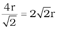
(we can also write, 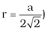
We know, that each unit cell in ccp structure, has effectively 4 spheres. Total volume of four spheres is equal to and volume of the cube is a3 or 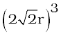.
Therefore,
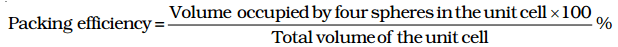
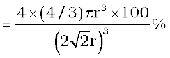
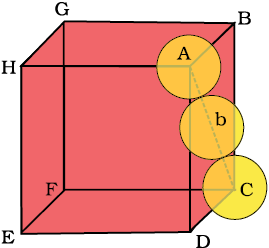
Cubic close packing other sides are not provided with spheres for sake of clarity.
It is clear that the atom at the centre will be in touch with the other two atoms diagonally arranged.
In ∆ EFD,
b2 = a2 + a2 = 2a2
b =
Now in ∆ AFD
c2 = a2 + b2 = a2 + 2a2 = 3a2
c =
The length of the body diagonal c is equal to 4r, where r is the radius of the sphere (atom), as all the three spheres along the diagonal touch each other.
Therefore, = 4r
a = 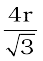
Also we can write, r = 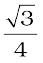a
In this type of structure, total number of atoms is 2 and their volume is
Volume of the cube, a3 will be equal to
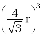or 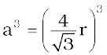.
Therefore,
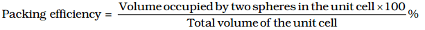
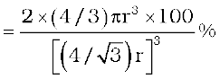
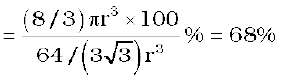
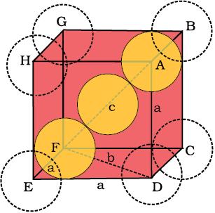
Body-centred cubic unit cell (sphere along the body diagonal are shown with solid boundaries).
In a simple cubic lattice the atoms are located only on the corners of the cube. The particles touch each other along the edge.
Thus, the edge length or side of the cube ‘a’, and the radius of each particle, r are related as
a = 2r
The volume of the cubic unit cell = a3 = (2r)3 = 8r3
Since a simple cubic unit cell contains only 1 atom
The volume of the occupied space = 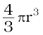
∴ Packing efficiency
=
= 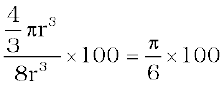
= 52.36% = 52.4 %
Thus, we may conclude that ccp and hcp structures have maximum packing efficiency.
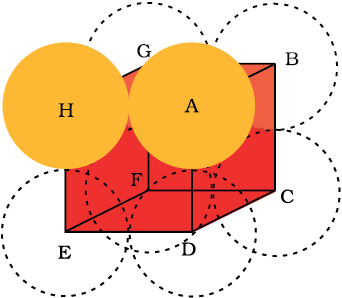
Simple cubic unit cell. The spheres are in contact with each other along the edge of the cube.